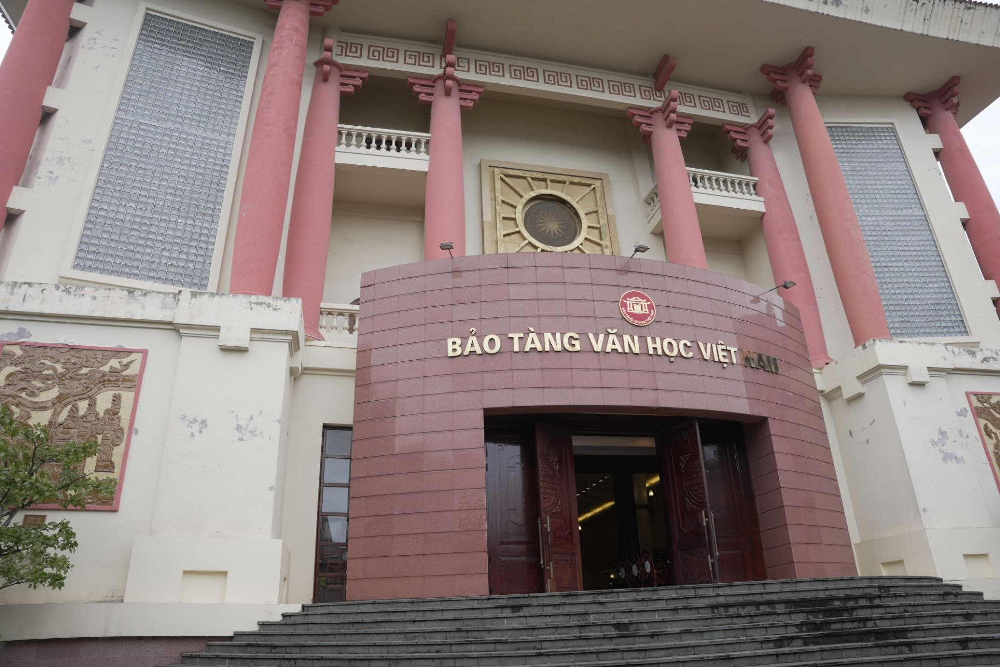
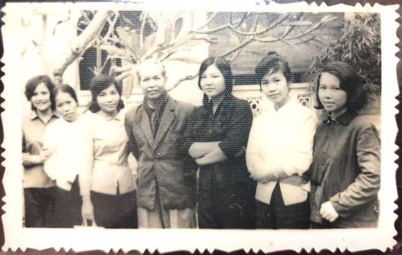
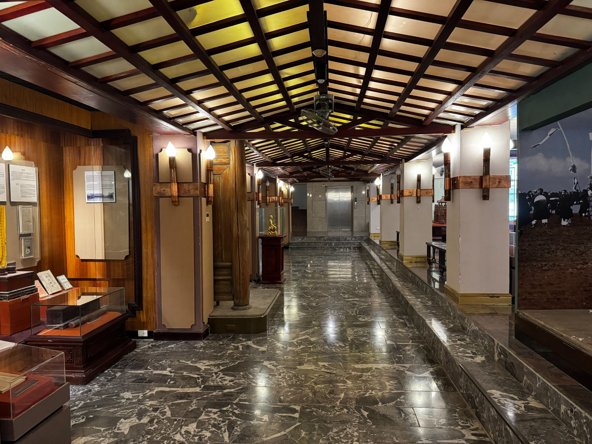

Trong bài
Từ một ngôi trường từng gắn với hoạt động đào tạo người viết, địa điểm tại ngõ 275 Âu Cơ hôm nay trở thành nơi lưu giữ nhiều dấu tích của văn học Việt Nam. Hành trình từ Trường viết văn Quảng Bá đến bảo tàng là câu chuyện về sự tiếp nối của những thế hệ cầm bút, những tác phẩm và ký ức văn chương qua thời gian.
Văn học Việt Nam bắt đầu từ một không gian đặc biệt
Nằm tại ngõ 275 Âu Cơ, Hà Nội, địa điểm hiện nay là Bảo tàng Văn học Việt Nam từng là nơi đặt Trường viết văn Quảng Bá, thuộc Hội Nhà văn Việt Nam. Trong một thời gian dài, nơi đây gắn với hoạt động đào tạo và bồi dưỡng những người sáng tác, trở thành không gian gặp gỡ của những người có chung tình yêu với văn chương.

Sự hiện diện của một Trường viết văn có ý nghĩa đặc biệt đối với đời sống văn học. Bởi viết không chỉ là hoạt động cá nhân mà còn cần môi trường để người viết học hỏi, trao đổi và phát triển tư duy sáng tác. Tại Quảng Bá, những người trẻ bước vào thế giới văn chương với những trải nghiệm và cách nhìn khác nhau, từ đó hình thành những giọng điệu riêng.
Theo thời gian, nhiều thế hệ nhà văn đã gắn với môi trường đào tạo và sinh hoạt văn chương này. Mỗi người mang theo một câu chuyện, một phong cách và một hành trình sáng tác riêng. Những dấu ấn ấy góp phần tạo nên bức tranh đa dạng của văn học Việt Nam trong từng giai đoạn.
Vì thế, khi nhìn lại lịch sử của địa điểm này, Trường viết văn Quảng Bá không đơn thuần là một cái tên gắn với một công trình. Đó còn là một phần ký ức về quá trình hình thành, đào tạo và tiếp nối những thế hệ người viết.
Từ Trường viết văn Quảng Bá đến nơi lưu giữ văn chương
Nếu Trường viết văn là nơi hướng đến việc đào tạo người sáng tác, thì bảo tàng lại đảm nhận một nhiệm vụ khác: lưu giữ những dấu tích mà các thế hệ văn chương để lại.

Sự chuyển đổi ấy tạo nên một mạch nối thú vị. Một không gian từng chứng kiến những người học cách viết nay trở thành nơi công chúng tìm hiểu về những người đã viết, những tác phẩm đã ra đời và những câu chuyện phía sau đời sống văn học.
Từ đây, văn học Việt Nam không chỉ được tiếp cận qua những trang sách. Người xem còn có thể tìm hiểu văn chương thông qua bản thảo, hình ảnh, hiện vật, kỷ vật và những tư liệu gắn với cuộc đời của các tác giả.
Đó cũng là lý do di sản văn học cần được lưu giữ bằng nhiều hình thức khác nhau. Một tác phẩm có thể được đọc lại qua nhiều thế hệ, nhưng những hiện vật gắn với tác giả hay quá trình sáng tác lại mang giá trị như những chứng nhân trực tiếp của lịch sử.
Từ một địa điểm đào tạo người viết đến một không gian bảo tồn văn chương, hành trình của Quảng Bá vì thế có thể được nhìn như sự chuyển tiếp giữa hai nhiệm vụ: tạo dựng và lưu giữ.
Một bên hướng đến tương lai của người viết; một bên hướng về những gì các thế hệ trước đã để lại. Hai chức năng ấy cùng gặp nhau ở một điểm: giữ cho dòng chảy văn học Việt Nam không bị đứt đoạn.
Quảng Bá và hành trình tiếp nối văn học Việt Nam
Giá trị của một bảo tàng văn học không chỉ nằm ở số lượng hiện vật được lưu giữ. Quan trọng hơn là khả năng giúp những câu chuyện ấy tiếp tục được kể với công chúng hôm nay.
Từ ký ức về Trường viết văn Quảng Bá, nơi đây đã trở thành điểm gặp gỡ giữa quá khứ và hiện tại. Những người từng học, từng viết và từng hoạt động trong đời sống văn chương được đặt trong mối liên hệ với những thế hệ độc giả mới.
Với người trẻ, cách tiếp cận này đặc biệt có ý nghĩa. Thay vì chỉ biết một tác giả qua tên trên bìa sách, họ có thể tìm hiểu thêm về cuộc đời, không gian sống, quá trình sáng tác và những dấu tích vật chất mà người viết để lại.

Một bản thảo có thể khiến người xem tò mò về tác phẩm. Một bức ảnh có thể mở ra câu chuyện về một nhà văn. Một hiện vật có thể trở thành điểm khởi đầu để tìm hiểu cả một giai đoạn lịch sử.
Nhờ đó, văn học Việt Nam không còn là một khái niệm chỉ nằm trên trang sách. Văn chương trở thành những câu chuyện có hình hài, có ký ức và có con người cụ thể.
Đây cũng là cách di sản văn học được tiếp tục trao truyền. Những gì được lưu giữ hôm nay sẽ trở thành tư liệu cho nghiên cứu, giáo dục và những cách khám phá mới trong tương lai.
Từ Trường viết văn Quảng Bá đến bảo tàng, hành trình ấy vì vậy không phải là sự kết thúc của một không gian cũ mà là sự mở ra của một chức năng mới. Nơi từng đào tạo những người viết nay trở thành nơi kể lại câu chuyện về những người viết và những thành tựu họ để lại.
Ở đó, quá khứ không bị đóng khung mà tiếp tục đối thoại với hiện tại. Những thế hệ nhà văn đi qua, những tác phẩm được viết ra và những hiện vật được lưu giữ cùng tạo nên một dòng chảy liên tục của văn học Việt Nam.
Từ Trường viết văn Quảng Bá đến Bảo tàng Văn học Việt Nam là hành trình từ nơi đào tạo người viết đến không gian lưu giữ ký ức văn chương. Qua những hiện vật, tư liệu và câu chuyện về các nhà văn, nơi đây giúp công chúng nhìn lại những chặng đường của văn học Việt Nam, đồng thời đưa di sản văn học đến gần hơn với các thế hệ hôm nay.
Bảo tàng Văn học Việt Nam